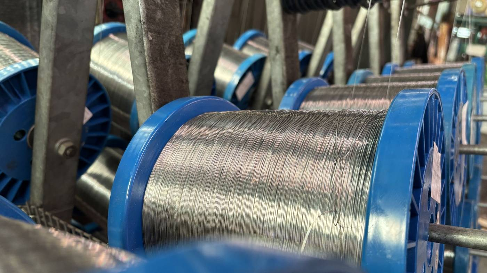
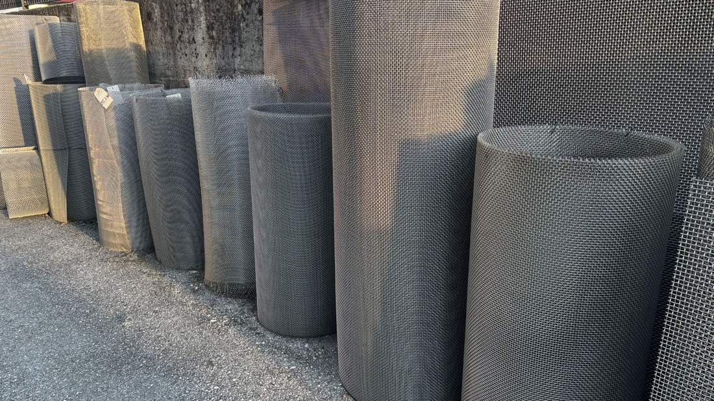
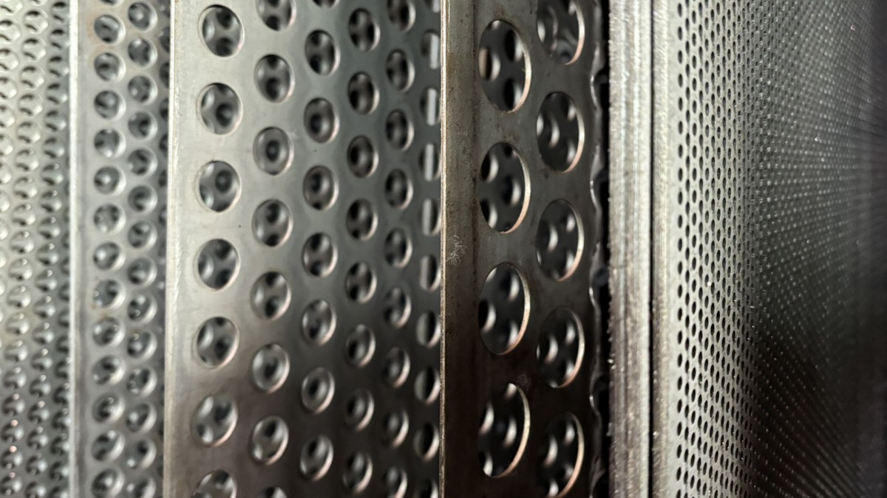
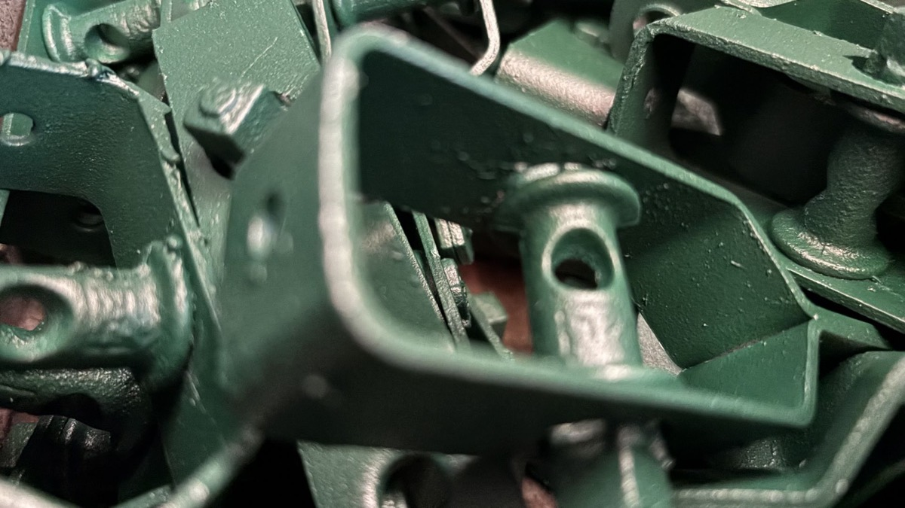
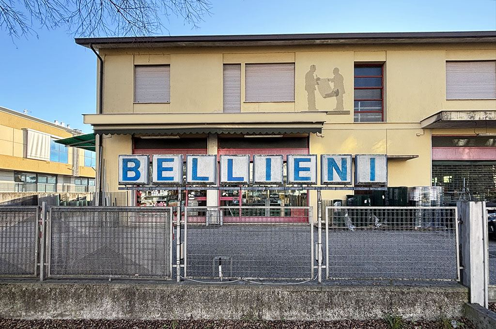

Imprese edili
Reti per il cantiere, lamiere stirate per facciate e schermature, grigliati per bocche di lupo e passerelle.
Le produciamo e le teniamo a magazzino a Treviso dal 1893. Per imprese edili, officine, industria e privati di tutto il Nord-Est.
Tela metallica in ottone sul rullo, nel nostro reparto di Treviso.
Il nostro logo è fatto di tre campioni di metallo. Qui li trovate tutti: sei famiglie di prodotto, dal filo sottile al pannello da recinzione. Scorrete per sfogliarli.
Tessute su telai specializzati, con maglie regolari per filtrare liquidi, polveri e gas. Anche maglie fuori standard e quantità piccole, per test e campionature.
Per cantiere, stabilimento e vagli vibranti. In ferro grezzo, zincato o inox, anche su misura sulle specifiche del vostro ufficio tecnico.
Fori tondi, quadri, romboidali o microfori per far passare aria, luce, liquidi e calore. Formati da magazzino oppure a disegno, con taglio, calandratura e piega.
Leggere e indeformabili: facciate, schermature, passerelle, gradini antiscivolo e filtrazione fine. In fogli o in rotoli, con maglie romboidali, esagonali o quadre.
Pannelli Lario da circa 2 metri, pre-zincati e verniciati a forno, con le nervature che li irrigidiscono. Cancelli pedonali pronti, carrabili su ordinazione, reti in rotolo fatte da noi.
Grigliati per caditoie, canaline, passerelle e bocche di lupo, standard o a disegno, bordati e non. Filo spinato zincato o plastificato per alzare la sicurezza di un recinto.
Il filo arriva in bobina ed esce dal reparto come rete o tela. Per questo possiamo fare quello che a catalogo non c'è.




Reti per il cantiere, lamiere stirate per facciate e schermature, grigliati per bocche di lupo e passerelle.
Lamiere forate e stirate a disegno, già tagliate, calandrate e piegate, pronte da montare nella commessa.
Tele filtranti inox per l'alimentare, il chimico e il meccanico, reti per vagli vibranti, microstirate per filtrare.
Recinzioni modulari, cancelli, reti in rotolo e filo spinato per giardini, cortili, capannoni e parcheggi.
Dal modulo qui sotto, per email o al telefono. Il preventivo è gratuito.
Vi aiutiamo a trovare l'apertura e la lega giuste per l'uso che ne farete.
Se è a magazzino è pronto. Se non c'è, lo produciamo o lo procuriamo a disegno.
Evasione rapida per Treviso, Venezia, Padova e tutto il Nord-Est.

Lavoriamo il filo metallico da più di 130 anni. Alle reti e alle tele si sono aggiunte le lamiere, le recinzioni e i grigliati. Il modo di lavorare invece è sempre lo stesso.
Diteci prodotto, misure e quantità. Il preventivo è gratuito e vi rispondiamo con prezzo e disponibilità.
Telefono0422 306145